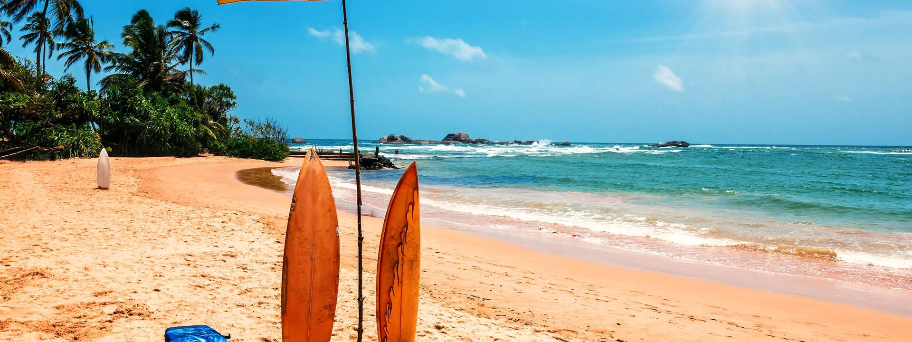
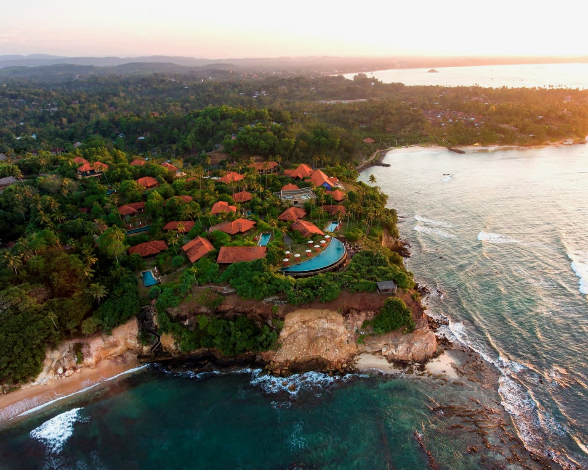
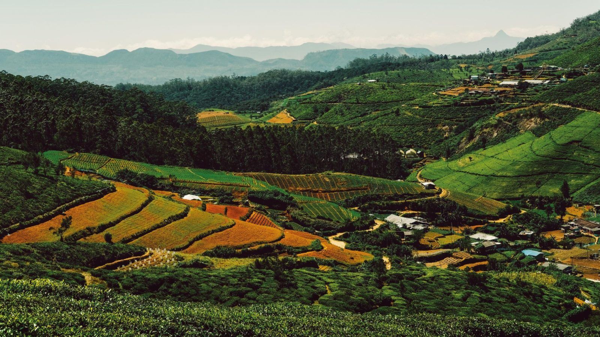
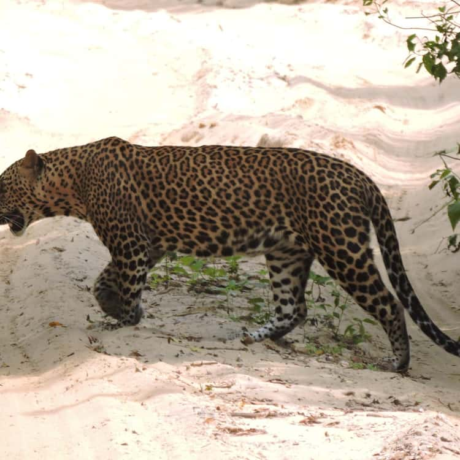
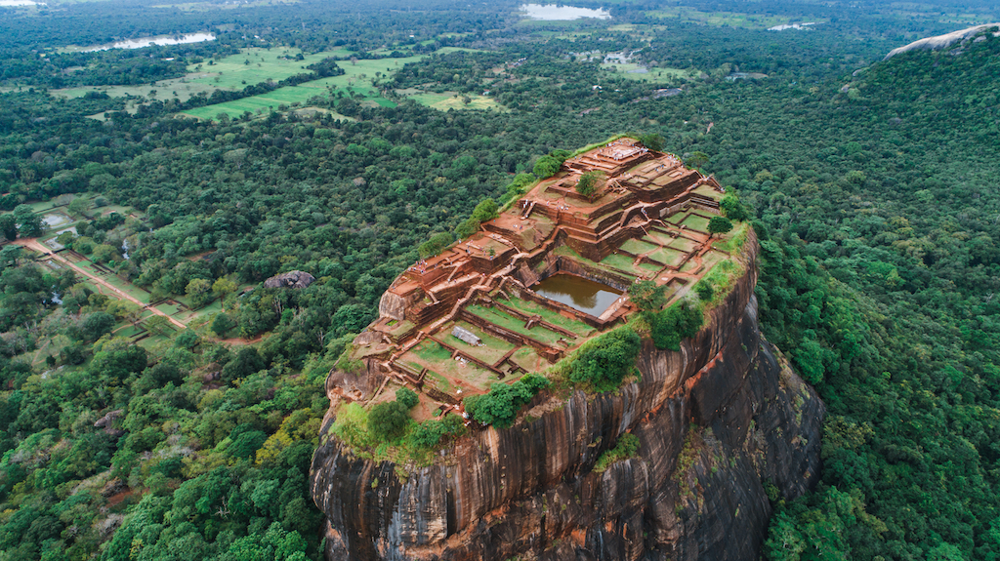
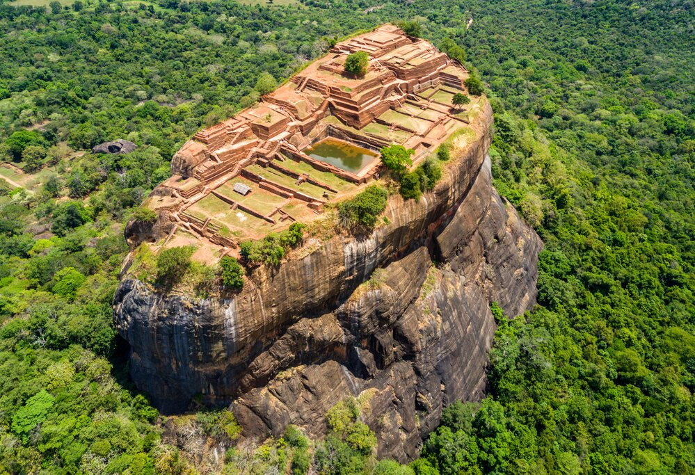
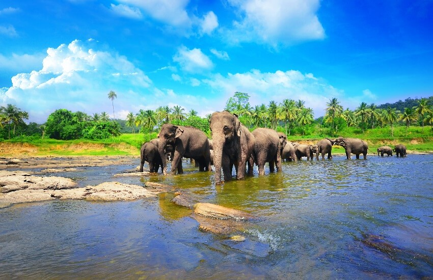

A living island / 06° 55′ N, 79° 52′ E
The island is calling
Discover the
Soul of Sri Lanka.
One island. A thousand experiences.
Find the version of Sri Lanka that stays with you.
From ocean to highlands
in a single day
in a single day
Scroll to enter
01/09
01 — AN ISLAND OF CONTRASTS
A little island with a lot to say
Come for the landscapes.
Stay for the feeling.
Sri Lanka doesn’t ask you to choose between wild and refined. Here, ancient cities glow beside rainforests, tea trails fold into cloud, and the Indian Ocean is always just a turn away.
Follow the light inland ↗
ISLAND NOTE 0011° 51′ N → 9° 51′ NFrom coral shallows to cloud forest
0districts
one compact island
one compact island
0UNESCO sites
heritage in every layer
heritage in every layer
0km coastline
salt, surf & stillness
salt, surf & stillness
0ways to feel alive
editorial guide / demo
editorial guide / demo
Choose your atmosphere
A world of possibility.
Move slowly. Look closely.
The island rewards both.



05WellnessRituals for coming back to yourself.
06AdventureTake the scenic route.
07MountainsCloud, stone and a cooler horizon.
08WaterfallsFollow the sound through the green.
09JunglesWhere every leaf is listening.
10CultureRituals, rhythm and living memory.
11FoodHeat, smoke and generous plates.
12LuxuryStay somewhere worth slowing down for.
02 — DESTINATION STORIES
The island, unfolded.
Nine places. Nine different ways
to lose track of time.

01 / 09
Cultural triangle / sunrise
The Ancient
Sky Kingdom
A citadel in the clouds, where painted walls, water gardens and a 1,500-year-old story rise above the jungle.
BEST FORHeritage / sunrise
DON'T MISSLion's Paw ascent
03 — THE LIVING MAP
Find your north.
Tap a light. Follow the feeling.
The map is only the beginning.
INDIAN OCEAN / 2026
06° 55′ N / 79° 52′ E
04 — SLEEP BEAUTIFULLY
Stay a little longer.
01 / COASTAL ESCAPE
Wild Coast Tented Lodge
Yala / where the jungle meets the sea
02 / HIGHLAND RETREAT
Tea Trails
Hatton / four bungalows, one slow rhythm
03 / BEACH HOUSE
Amanwella
Tangalle / the ocean, uninterrupted
Availability and pricing are not connected in this demo. Choose a stay to begin a future booking flow.
05 — GO BEYOND
Not just a holiday.
The best souvenirs are
the stories you carry home.

Wild / 01Luxury
Luxury
safari
Meet the island on its own terms.
Ocean / 02Private
Private
yacht
Let the horizon come to you.
↗Highland / 03Tea estate
Tea estate
ritual
A table set in the mist.
↗Coast / 04Whale
Whale
watching
Go where the blue gets deeper.
↗Stillness / 05Ayurveda
Ayurveda
wellness
Return to your own rhythm.
↗Rail / 06Luxury train
Luxury train
journey
Let the landscape write the itinerary.
↗Hideaway / 07Private
Private
villa
Privacy with a view.
↗Evening / 08Sunset beach
Sunset beach
dinner
Salt air, candlelight, no rush.
↗Table / 09Private chef
Private chef
dinner
A menu shaped around the island.
↗Underwater / 10Scuba
Scuba
diving
See the coast from below.
↗Break / 11Surf the
Surf the
east coast
Find the line and hold it.
↗Above / 12Helicopter
Helicopter
island
Perspective changes everything.
↗Above / 13Hot air
Hot air
balloon
Rise with the first light.
↗Frame / 14Wildlife
Wildlife
photography
Wait for the eyes in the grass.
↗Memory / 15Cultural
Cultural
encounter
Learn the story behind the gesture.
↗Waterfall world
Mountain → forest → water.
Ravana FallsDiyaluma FallsBambarakanda FallsDunhinda FallsBaker's FallsSt. Clair's FallsDevon FallsAberdeen Falls
06 — YOUR INTELLIGENT COMPANION
AI
Thenuka AI / beta
The island,
in your rhythm.
Tell us what you want to feel. We’ll trace a first route through the island — a beginning, not a box to tick.
THENUKA AI01 / 03
01How do you want to
How do you want to
experience Sri Lanka?
02How many days do you
How many days do you
have to disappear?
03Choose your
Choose your
travel style.
07 — MAKE IT YOURS
Build my journey.
A route is a suggestion.
Your detours are the story.
Your route / drag to reorder
08 — THROUGH THE LENS
See it. Feel it.
A few frames from the
island’s visual diary.
THE SOUL
OF CEYLON
OF CEYLON
09 — THE LAYERS BENEATH
Culture is a living thing
The soul of
Ceylon.
From temple drums to hand-thrown clay, Kandyan rhythm to a cup of Ceylon tea, Sri Lanka’s culture is not behind glass. It is in the morning light, the roadside kitchen, the welcome at the door.
01 / Buddhist heritage02 / Traditional dance03 / Ancient cities04 / Tea culture
Taste the island ↗A table set by the tropics
Taste the
island.
Heat, smoke, coconut, curry leaf, sweetness. Sri Lankan food is generous by instinct and precise by memory.
Let us plan around your appetite ↗RICE
&
RHYTHM
&
RHYTHM
TASTE NOTE 007Eat with your hands.
Ask for more sambol.
Ask for more sambol.
Destination intelligence / demo